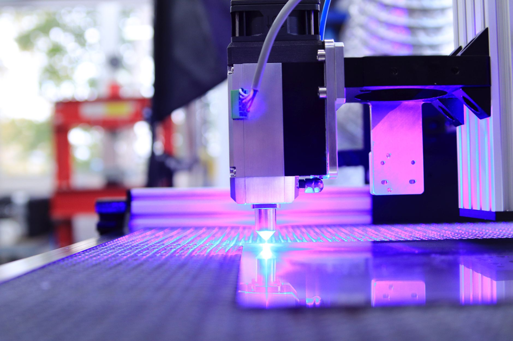

미중 갈등이 막은 중국 반도체, 한국이 누린 5년의 유예

SMIC는 2022년 미국 수출통제 이전 7nm 공정(N+2)을 독자 개발하며 TSMC 3~4년 격차를 2년 이내로 좁히는 속도로 추격 중이었다. 수출통제 이후 ASML EUV 장비 반입이 차단되면서 5nm 이하 미세공정 전환이 사실상 동결됐고, 현재 SMIC의 양산 한계선은 7nm(N+2)에서 멈춰 있다.
화웨이 어센드 910C는 CoWoS 방식 고밀도 패키징으로 엔비디아 H100 대비 학습 성능 80% 수준을 구현했다고 자체 발표했다. 그러나 HBM3 대신 HBM2e를 탑재해 메모리 대역폭이 절반 수준에 머물며, 대규모 LLM 추론 작업에서 병목이 발생한다. 이 격차의 핵심 원인은 삼성·SK하이닉스의 HBM3/HBM3e 공급이 차단됐기 때문이다.
중국 반도체 자급률은 2024년 기준 로직 반도체 16%, 메모리 반도체 5% 수준이다. 중국 정부는 '대기금 3기'(2023년 조성, 3,440억 위안·약 64조 원)를 통해 반도체 내재화에 투자하고 있지만, EUV 없는 미세공정과 HBM 없는 AI 칩이라는 두 가지 기술 천장이 동시에 막혀 있다.
수출통제 없이 정상적인 기술 확산이 이뤄졌다면, 2025년 시점에서 SMIC는 3nm급 파운드리, CXMT는 LPDDR5 수준 메모리를 양산했을 것이라는 추정이 복수의 반도체 애널리스트 사이에서 제기된다. 이 경우 삼성전자 파운드리 점유율과 SK하이닉스 DRAM 수익성 모두 현재보다 30% 이상 낮았을 것으로 분석된다.
한국 반도체 산업이 현재 누리는 기술 우위는 자체 혁신 속도만큼이나 미국 수출통제의 산물이다. 이 구조는 미중 관계가 완화되거나 중국이 독자 장비 생산에 성공하는 순간 흔들린다. 즉 현재의 안전 마진은 지정학적 조건에 종속된 '외생 변수'이며, 한국이 통제할 수 있는 내생 변수가 아니다.
더 위험한 시나리오는 중국이 EUV 없이 멀티 패터닝 기술을 고도화하거나, 러시아·네덜란드 우회 루트로 부품을 조달하는 경우다. 이미 SMIC의 N+2 공정이 ArF 다중 노광으로 EUV를 대체한 전례가 있다. 기술 우회 속도가 수출통제 강화 속도보다 빨라지는 시점이 한국 반도체의 실질적 위협 개시 시점이다.
한국이 이 5년의 유예 기간 동안 HBM·첨단 패키징·소재 국산화에 얼마나 투자했느냐가 미중 관계 재편 이후의 생존력을 결정한다. SK하이닉스의 HBM3e 독점 공급 지위와 삼성전자의 GAA 3nm 수율 개선이 이 유예기의 실질적 성과물이지만, 소재·장비 자립도는 여전히 20~30% 수준에 머물고 있다.
SK하이닉스: HBM3e 전 세계 공급의 약 60% 점유. 중국의 HBM 접근이 차단된 구조에서 엔비디아·AMD의 유일한 고대역폭 메모리 공급사 지위를 유지하고 있으며, 2025년 HBM 매출은 전년 대비 80% 이상 성장했다.
TSMC·삼성 파운드리: SMIC의 미세공정 동결로 3nm 이하 최첨단 로직 반도체 수주가 사실상 독점 구조로 유지된다. 애플·엔비디아·AMD·퀄컴의 차세대 칩 모두 TSMC 또는 삼성 파운드리를 거쳐야 한다.
중국 팹리스 기업(하이실리콘·캠브리콘 등): 자국 파운드리(SMIC)의 기술 천장으로 인해 최신 AI 칩 설계를 해도 양산 수단이 없다. 화웨이 어센드 시리즈의 수율과 출하량이 공식 발표치의 40~60% 수준이라는 산업계 추정이 제기된다.
한국 중소 소재·장비사: 수출통제로 인한 반도체 업황 호조가 삼성·SK 대형사에 집중되는 반면, 중소 소재사들은 중국 고객 상실(중국 반도체사向 납품 축소)과 국내 대형사의 단가 압박이 동시에 작용해 수익성이 악화되는 역설적 구조에 놓여 있다.
한국 반도체 기업은 지금의 기술 격차가 수출통제라는 외부 조건에 의존한다는 사실을 전략의 출발점으로 삼아야 한다. 구체적으로는 EUV 장비 국산화(ASML 의존 탈피), HBM 소재 국내 조달 비율 현재 40%→2027년 70% 목표 설정, 첨단 패키징 소재(봉지재·기판) 국산화가 우선 과제다.
투자자 관점에서 현재 반도체주의 프리미엄 일부는 '지정학 프리미엄'이다. 미중 관계 완화 신호(예: 반도체 분야 부분 합의, ASML의 중국 수출 제한 완화)가 나올 경우 한국 반도체주에는 단기 매도 압력이 발생할 수 있다. 이를 헤지하려면 소재·장비 국산화 수혜주(한미반도체·이오테크닉스·솔브레인 등)를 병행 편입하는 포트폴리오 구조가 유효하다.
정책 수립자에게는 현재의 유예 기간이 소재·장비 자립 투자의 골든타임임을 각인해야 한다. 대기금 3기(64조 원)에 맞서는 한국의 소부장 예산 1,700억 원은 400분의 1 수준이다. 양적 격차를 전략적 집중으로 메우려면 갈륨·게르마늄 등 병목 소재 2~3개에 예산을 집중하는 선택과 집중이 필수다.
실제 조달 현장에서는 — 수출통제 이후 중국 반도체사向 포토레지스트·CMP 슬러리 납품이 막힌 한국 소재사들이 고객 다변화를 위해 미국·유럽 팹에 진입을 시도하고 있다. 그러나 인증 기간이 최소 18~24개월이어서 단기 매출 공백을 메우는 데 실패하는 경우가 많다. 소재사라면 지금 당장 미국·유럽 팹의 공급망 등록(QSL·AVL) 절차를 병행 진행해야 한다.
이 포스팅은 쿠팡 파트너스 활동의 일환으로 수수료를 제공받습니다.